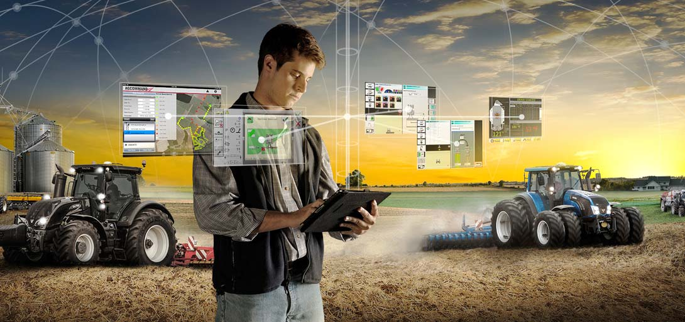

As pontes digitais entre o campo e a cidade
A segunda etapa mostra como as ferramentas digitais — como marketplaces, redes sociais e educação online — conectam produtores rurais a consumidores urbanos e criam novas formas de colaboração.
Agricultores e produtores rurais usam essas plataformas para divulgar seus produtos, contar suas histórias e mostrar o dia a dia no campo, aproximando o consumidor da origem dos alimentos. Isso cria uma relação de confiança, valoriza a produção local e incentiva o consumo consciente. Além disso, o marketing digital permite que o produtor alcance novos mercados, aumente as vendas diretas e reduza intermediários, promovendo uma economia mais justa e conectada.
